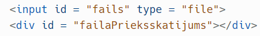
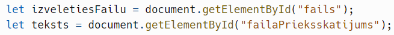
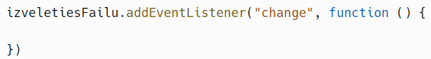
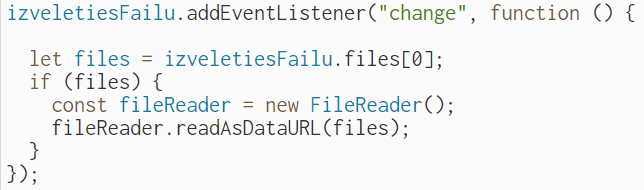
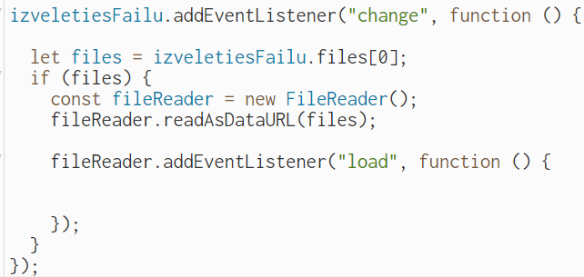
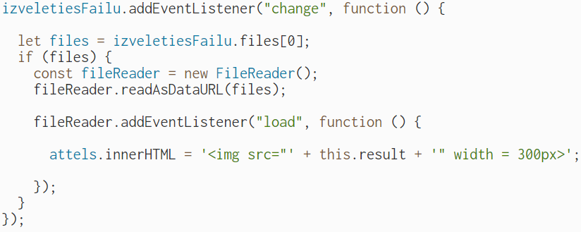
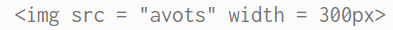
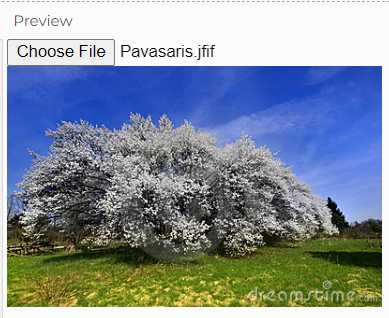

Attēla datnes satura parādīšana mājaslapā
Datņu satura parādīšana mājaslapā var atvieglot informācijas attēlošanu lapā vai izveidot iespēju nedaudz personalizēt lapu izmantojot attēlus.
Lai attēlotu attēla datnes saturu lapā:
- solis - HTML daļā izveido datnes ievades lauku un datnes satura parādīšanas lauku:

- solis - JavaScript daļā izveido mainīgos, kas norādīs, ka darbosies ar izveidotajiem HTML elementiem:

- solis - faila elementam pievieno notikumu klausītāju, kas izpildīs kodu, kad tiks izvēlēts kāds fails:

- solis - izveido faila lasīšanas funkciju, kas pievienoto dati nolasīs kā attēlu:

fileReader.readAsDataURL(files) - nolasa augšupielādēto datni un nolasa kā attēla avotu.
- solis - faila lasīšanas funkcijai pievieno notikumu klausītāju, kas atbild par satura ielādēšanu ar notikumu “load”:

- solis - izvada faila lasīšanas rezultātu:

attels.innerHTML = ‘<img src = “’ + this.result + ‘“ width = 300px>’ - izveido HTML attēla elementu, kuram avots ir augšupielādētais fails.
Pamatā izvadē tiek izveidots šāds elements:

Rezultāts:
